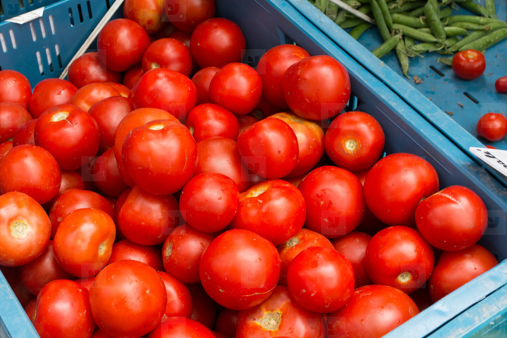

MyGrocery provides a one-stop fresh grocery shopping for all the groceries you may need.
We are located in Remera, Kimironko and Masoro. You may also contact us by clicking on the Contact Us link on the navigation bar above if you want the groceries delivered to your door step.
Be our guest!